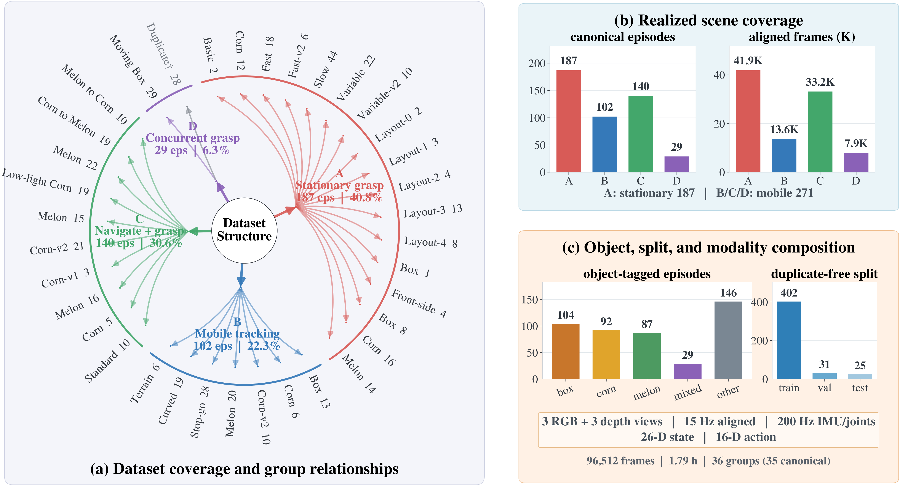
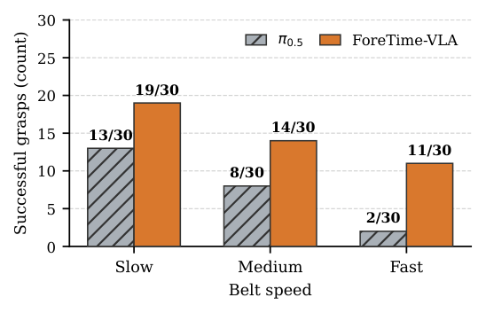
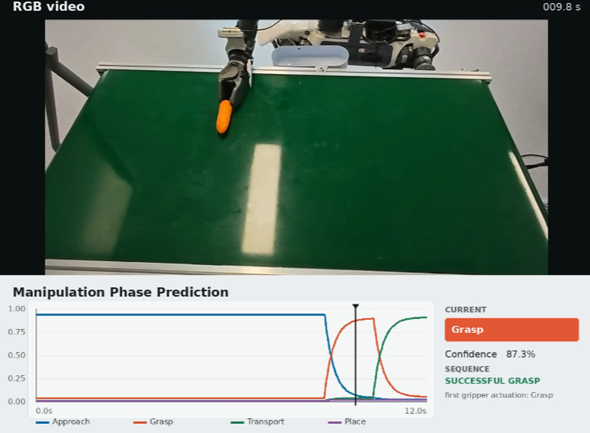

ForeTime-VLA: Causal Future-Token Distillation from a World Action Model for Conveyor-Belt Manipulation
1. 论文速览与证据链
一句话贡献
ForeTime-VLA 离线蒸馏冻结 Fast-WAM 的未来表征，用四个 causal future tokens、phase token 与 time-to-transition 监督 π0.5，在传送带动态抓取中以约 3% 延迟代价提升接触预测和成功率。
元数据与阅读定位
| 技术类型 | Causal future-token distillation |
|---|---|
| 关键词 | ForeTime-VLA、Fast-WAM、future token、phase token、time-to-transition、action equivalence、flow matching、conveyor manipulation |
| 开源情况 | 论文与源码公开；Fast-WAM 教师和传送带数据发布状态需核查 |
| 适合程度 | 高：把 WAM 的未来知识压缩进在线 VLA，而非部署视频生成器 |
从哪里开始读
离线教师把当前与未来视频 latent 压缩、白化成 64 维 target；在线八帧 history encoder 只读取过去，输出四个 future tokens、一个 phase token 和 transition horizon。tokens 注入 VLM prefix，未来向量与时距进入 action expert，原始 flow-matching 动作损失保留。 阅读时先确认中间表示是否在部署端运行，再用主结果和消融判断它究竟改善了感知、动态预测还是动作生成。
图表证据链
| # | 原始图 | 支持的主张与边界 |
|---|---|---|
| 1 | 教师蒸馏与在线策略总览 | 图中区分离线 Fast-WAM target 和在线八帧 causal encoder，四 future token、phase token 分别流向 VLM 与 action expert。 |
| 2 | 未来教师与 64 维目标 | 当前/未来 latent 经压缩和白化形成 target；这解释学生为何预测紧凑状态而非整段像素视频。 |
| 3 | 传送带窗口和阶段划分 | 数据图将历史窗口、接触阶段与未来监督对齐，显示 time-to-transition 的标注来源。 |
| 4 | 不同带速成功率 | 速度分层结果显示增益在动态条件更明显，而不是只改善静止抓取。 |
| 5 | 真实机器人动态抓取序列 | 连续帧呈现接近、接触和抬升，支持 phase-aware token 对时机判断有帮助，但仅覆盖该平台。 |
2. 问题与动机
问题定义
移动物体抓取需要在接触前预测未来姿态，但在线运行视频尺度 WAM 成本过高；只看当前帧的 VLA 又缺少未来约束。本文把问题限定为：能否在训练时借助世界动作模型、推理时只保留轻量因果 token。
现有路线为何不足
world model 可直接生成未来帧或 latent rollout，代价是部署延迟；普通 distillation 往往只对齐单一特征。ForeTime-VLA 同时预测 future representation、manipulation phase、阶段切换时间和 action-equivalence，使未来知识落到接触动作而非视觉相似。
作者的解题假设
ForeTime-VLA 离线蒸馏冻结 Fast-WAM 的未来表征，用四个 causal future tokens、phase token 与 time-to-transition 监督 π0.5，在传送带动态抓取中以约 3% 延迟代价提升接触预测和成功率。 该假设只有在统一骨干、数据和评测下仍带来增益时才成立。
4. 方法、表示与训练
端到端信息流
离线教师把当前与未来视频 latent 压缩、白化成 64 维 target；在线八帧 history encoder 只读取过去，输出四个 future tokens、一个 phase token 和 transition horizon。tokens 注入 VLM prefix，未来向量与时距进入 action expert，原始 flow-matching 动作损失保留。
核心表示
64 维 target 通过白化减少各 latent 维尺度不均；relational geometry loss 保持 batch 内未来样本关系，cosine loss 对齐方向，phase 与 time-to-transition 让 token 显式刻画接触阶段。action-equivalence loss 约束预测未来与教师未来对动作分布产生相近影响。
训练阶段与目标
训练使用去重的传送带窗口，40k-step checkpoint 在每个 split 的 768 个配对窗口上比较。学生保留 π0.5 dense policy 和 flow matching，只增加 future/phase 辅助目标；教师在部署时完全移除。
推理与部署路径
八帧历史编码器因果生成 future/phase token，不读取真实未来；action expert 同时接收 VLM 条件和预测 transition horizon。额外延迟报告为 2.46–2.93%，远低于在线 Fast-WAM rollout。
教师蒸馏与在线策略总览

未来教师与 64 维目标

5. 实验、结果与消融
数据集、任务与协议
离线指标包括 action MAE/L2 与 latency；真实机器人分别测试 stationary、slow-moving 以及三档 belt speed。匹配窗口和 paired bootstrap 用于给出离线提升置信区间，真实抓取共比较 90 次。
主要定量结果
测试 MAE 从 0.134119 降到 0.130593，改善 2.63%，paired-bootstrap 95% CI 为 0.82–4.48%；L2 改善 3.02%。真实 stationary/slow-moving 成功率为 81.1%/58.9%，三档速度合计 44/90，对 π0.5 的 23/90。
消融与因果解释
证据链把离线 orientation/contact-pose 误差与真实失败类型关联，说明收益不是均匀动作平滑。仍需注意数据是单一传送带场景，64 维白化 target、四 future tokens 与八帧历史是否最优尚未由广泛任务验证。
证据没有覆盖什么
从当前评测覆盖看，方法依赖 teacher target 的质量，若 WAM 在新物体或遮挡下预测错误，学生会固化偏差。真实实验规模和任务类型窄，结果不能说明 token 对任意长时域 manipulation 有效；time-to-transition 也假设可分阶段过程。
传送带窗口和阶段划分

不同带速成功率

真实机器人动态抓取序列

6. 复现路径与工程风险
最小可行复现
最低复现需要同一 conveyor 数据切窗、冻结 Fast-WAM latent、白化统计、π0.5 action expert 与真实速度分层测试。验收先复现配对窗口 MAE，再看 fast speed 接触失败；困难在教师权重、时间同步和真实带速标定。
验收标准
测试 MAE 从 0.134119 降到 0.130593，改善 2.63%，paired-bootstrap 95% CI 为 0.82–4.48%；L2 改善 3.02%。真实 stationary/slow-moving 成功率为 81.1%/58.9%，三档速度合计 44/90，对 π0.5 的 23/90。 复现时至少应恢复相同方向的增益，并报告同一随机种子、数据规模和延迟预算。
复现风险清单
| 环节 | 具体风险 |
|---|---|
| 数据 | 需取得论文列出的训练数据、相同切分与时间同步；未公开数据必须单列。 |
| 模型 | 需固定视觉/VLM 骨干、tokenizer 与动作头，避免把模型规模差异误判为方法收益。 |
| 训练 | 按论文阶段顺序复现，并保留无 latent/world objective 的严格对照。 |
| 评测 | 同时复现主指标、消融和失败类型；开环结果不能替代闭环安全。 |
| 硬件 | 最低复现需要同一 conveyor 数据切窗、冻结 Fast-WAM latent、白化统计、π0.5 action expert 与真实速度分层测试。验收先复现配对窗口 MAE，再看 fast speed 接触失败；困难在教师权重、时间同步和真实带速标定。 |
7. 分析、局限与边界
最有价值的贡献
综合方法与实验证据，ForeTime-VLA 离线蒸馏冻结 Fast-WAM 的未来表征，用四个 causal future tokens、phase token 与 time-to-transition 监督 π0.5，在传送带动态抓取中以约 3% 延迟代价提升接触预测和成功率。
作者结论的适用边界
将结论外推前需要保留以下边界：方法依赖 teacher target 的质量，若 WAM 在新物体或遮挡下预测错误，学生会固化偏差。真实实验规模和任务类型窄，结果不能说明 token 对任意长时域 manipulation 有效；time-to-transition 也假设可分阶段过程。
可信的后续实验
驾驶中可把 future tokens 用于路口交互：教师离线看未来 BEV/轨迹，学生仅凭历史多相机预测 compact dynamics、事件 phase 和 time-to-conflict，再注入 planner；应重点测极端长尾和 teacher error propagation。
8. 组会问答与阅读结论
Q1. 为何不直接部署 WAM？
A：视频尺度教师太慢；蒸馏后只运行八帧 encoder 和少量 token。
Q2. future token 是否偷看未来？
A：训练 target 看未来，但学生输入严格为历史，部署时因果。
Q3. 最有说服力的结果？
A：快带速 11/30 对 π0.5 的 2/30，并且离线接触姿态误差同步下降。
Q4. 额外代价多大？
A：论文报告 2.46–2.93% latency cost。
Q5. 最大边界？
A：单一 conveyor grasping 和固定阶段结构，跨任务泛化尚未证明。
我的阅读笔记
结合本批论文的比较，我的后续关注点是：驾驶中可把 future tokens 用于路口交互：教师离线看未来 BEV/轨迹，学生仅凭历史多相机预测 compact dynamics、事件 phase 和 time-to-conflict，再注入 planner；应重点测极端长尾和 teacher error propagation。